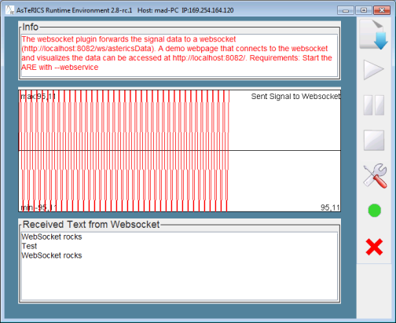

Objective
Visualization of signal data in a web live chart using Javascript.Description
The demo generates a sine signal and broadcasts the signal data through a websocket (ws://localhost:8082/ws/astericsData). The data is visualized in a Javascript live chart. You can also send data to the model by pressing the "Send test message" button.

Visualization of Signal
Requirements
- AsTeRICS 3.0 installed and ARE running
- OS: Windows, Linux (incl. RPi), Mac OSX